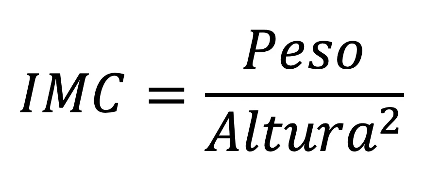

IMC o que é ? E como descobrir o seu ?
O que é IMC ?
O Índice de Massa Corporal (IMC) é uma ferramenta utilizada para avaliar se uma pessoa está dentro de um peso saudável em relação à sua altura. Ele é amplamente utilizado por profissionais de saúde como uma maneira simples e eficaz de monitorar o risco de doenças relacionadas ao peso, como doenças cardíacas, diabetes tipo 2 e hipertensão. Embora o IMC não seja um diagnóstico definitivo, ele pode ajudar a identificar possíveis problemas de saúde relacionados ao peso corporal.
Como o IMC é calculado?
O cálculo do IMC é simples e envolve uma fórmula matemática que divide o peso da pessoa (em quilogramas) pela altura (em metros) ao quadrado. A fórmula é a seguinte:

Tal calcular seu IMC?
Interpretação do IMC
Com base no valor do IMC, é possível classificar o peso em diferentes categorias. A tabela abaixo apresenta as faixas de IMC e suas respectivas classificações:
-
Abaixo do peso: IMC abaixo de 18,5.
-
Peso normal: IMC entre 18,5 e 24,9.
-
Sobrepeso: IMC entre 25 e 29,9.
-
Obesidade: IMC acima de 30.
Essas faixas são apenas diretrizes gerais. Para uma avaliação mais detalhada e personalizada da saúde, é importante consultar um médico ou nutricionista.
Limitações do IMC
Embora o IMC seja uma ferramenta útil para avaliar a saúde geral, ele possui algumas limitações. O IMC não leva em consideração fatores como a composição corporal (proporção de músculos e gordura), o que significa que pessoas com alta massa muscular, como atletas, podem ter um IMC mais elevado sem estarem necessariamente acima do peso. Além disso, ele não distingue a distribuição da gordura corporal, o que pode ser relevante para identificar riscos à saúde.
Conclusão
O IMC é uma maneira prática e amplamente utilizada para monitorar o peso corporal e estimar o risco de doenças associadas ao excesso ou à falta de peso. No entanto, para um diagnóstico preciso e orientações personalizadas, é fundamental buscar o acompanhamento de profissionais de saúde.